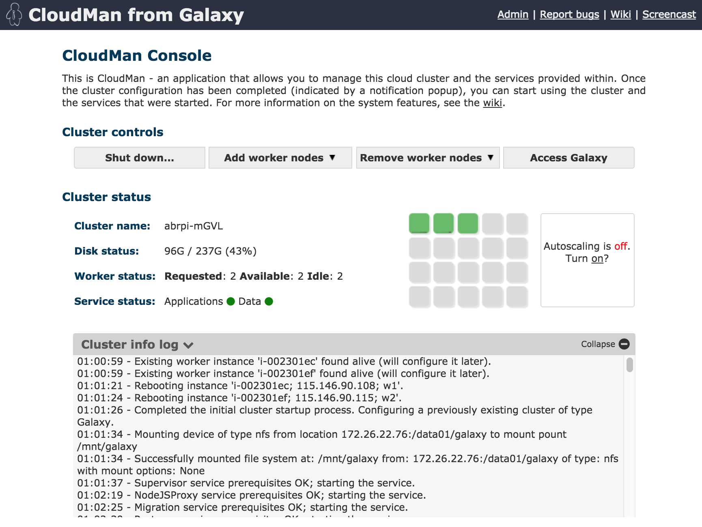
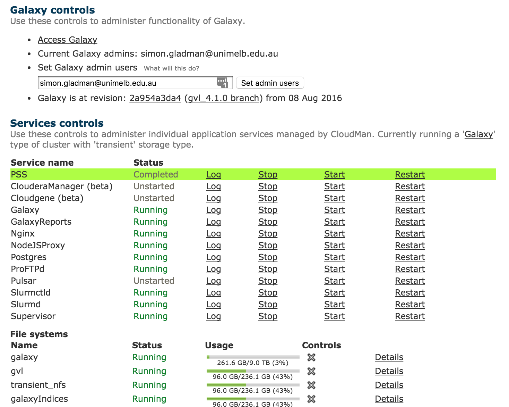
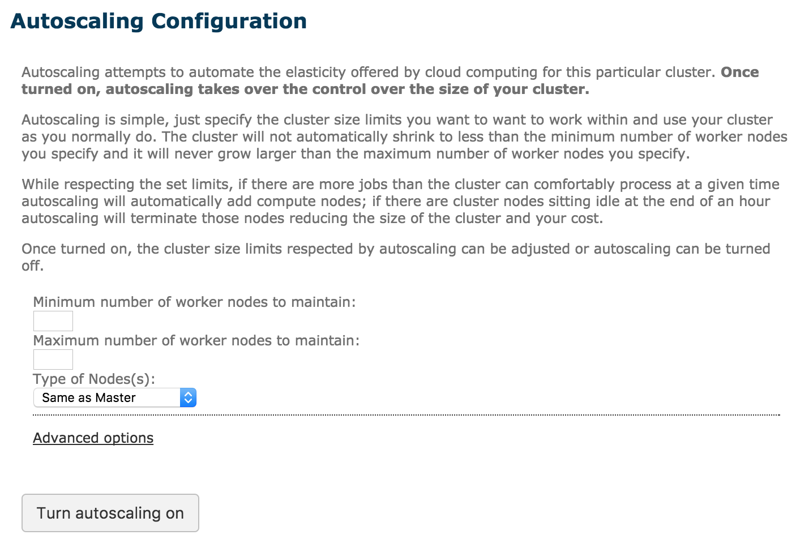
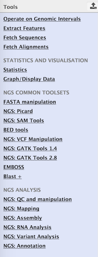
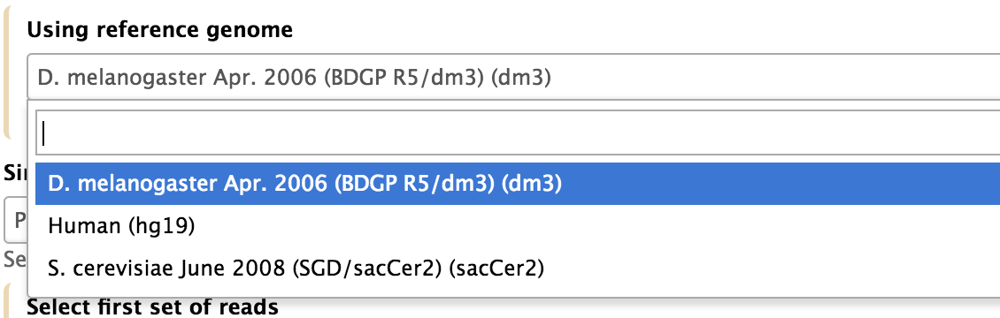

Galaxy on the Cloud
Contributors
All these Clouds
It’s positively meterological..
Overview
.large[
- Galaxy in the Clouds?
- AWS and other Clouds
- CloudMan and CloudLaunch (& cloud agnosticisim)
- Genomics Virtual Lab
- Architecture
- Persistence
- Integration with the cloud: CloudBridge ]
Speaker Notes
Help!
.large[
- Galaxy server flat out?
- Queue longer than a Grateful Dead concert?
- An urgent job to run?
What do you do now? ]
Help!
.large[
- Galaxy server flat out?
- Queue longer than a Grateful Dead concert?
- An urgent job to run?
What do you do now?
.special[Use the cloud man!] ] .center[]
Clouds?
Cloud computing … is a model for enabling ubiquitous, on-demand access to a shared pool of configurable computing resources … which can be rapidly provisioned and released with minimal management effort. Cloud computing and storage … may be located far from the user – ranging in distance from across a city to across the world. - Wikipedia, Cloud Computing.
.center[
 ]
]
Speaker Notes
On demand, free or paid, transient, NOT meant to be persistent, turn off when you don’t need them.
Available Clouds
.large[
- Commercial: Amazon Web Services, Google Compute Engine, Microsoft Azure
- Pay-per-time/machine etc.
- Reasonably priced, but keep an eye on the costs
- Large range of machine (i.e., instance) types
- Education grants
- Academic:
- OpenStack: open source community project
- NeCTAR in Australia, Jetstream in USA, CLIMB in UK, lots of others
- Some free for researchers (NeCTAR, CLIMB), some with project grants (Jetstream) ]
Speaker Notes
Really want to monitor how much you’re using these in order to minimize costs. They do give out edu grants and Galaxy has received large ones at GCCs.
Aussie one is free, same in UK, Jetstream you need to obtain credits through a granting agency
Why Clouds?
.large[
- Elastic compute!
- Can dynamically resource analyses
- No need to maintain the hardware
- Provider takes on cost of hardware and maintenance
- Cost is shared between all users
- Move the compute to the data
- Data on East Coast?
- Start compute there. Save on data transfer. ]
Speaker Notes
Have a course, suddenly 150 people show up and are flooding the normal queue, expecting to run jobs in workshops and not sit in queue for 2 days since they won’t be here tomorrow. Cloud is a great way to instantly provide resources.
EU does Training Infrastructure as a Service and spins up cloud resources whenever they need.
Don’t have to purchase + maintain hardware, which is great. Uploading data can be difficult.
Galaxy on the Cloud
.large[
- There are cloud images (VM blueprints) available
- with Galaxy pre-installed
- with different sets of tools installed
- with access to reference data
- for different clouds (AWS globally, Jetstream, NeCTAR, CLIMB etc.)
- You just need credentials for the cloud you want to “launch” on.
- Credentials are generally strings
- An access key and a secret key or username and password with project details
- They are obtained from the cloud account admin page you want to use ]
Speaker Notes
The GVL image has CVMFS pre-installed, same for other Galaxy images, basically ready to go. Provide cloud credentials to CloudLaunch and it will manage Galaxy on your behalf
CloudLaunch
.large[
- CloudLaunch is a system for launching Galaxy (and other applications) on cloud resources
- Public server available at launch.usegalaxy.org
- You can also install and run your own
- Fill in the credential details, choose a location and machine size
- Press go!
- CloudLaunch will now provision you a computer in the cloud with Galaxy installed and ready to go.
- Depending on your choices and availability you will also have access to reference data and various tools
- It should only take 2-3 minutes for everything to be set up. ]
Speaker Notes
How do you get more cloud resources? Obtain resources from provider and then use CloudLaunch
Launch Demo
.large[ End-user perspective
- Create your own machine with Galaxy in the cloud
https://launch.usegalaxy.org/ ]
Cloud Manager
.center[]
.large[
- Cloud manager: middleware to control cloud clusters
- Can be used to control system and application services, such as Galaxy
- Can mount filesystems, dynamically add/remove worker nodes, start/stop services ]
CloudMan
.center[.reduce80[]]
Speaker Notes
The green are worker nodes
CloudMan Admin
.center[.reduce80[]]
Speaker Notes
Can start NGINX, Galaxy, Pulsar, etc.
Cluster on the Cloud?
.large[
- Your CloudMan instance is a single machine
- It is the “Head node” of a cluster
- CloudMan can start “worker” nodes.
- More cloud instances (of any size)
- Automatically connects to file system
- Are registered in Slurm setup
- A node will take ~2-3 minutes to start and configure. ]
Auto-Scaling
.large[
- Can set up dynamic scaling to respond to the system load
- Upper and lower node numbers
- When queue is full and jobs wait certain time, new nodes are launched. ]
.center[.reduce60[]]
CloudMan Galaxy
.large[
- Your Galaxy server is set up and ready to go!
- Includes large list of pre-installed tools.
- Includes access to reference data files
- Zero-to-go in less than 10 minutes.
- Toolsets and reference sets can be tailored to suit needs
- Will be discussed in architecture section ]
CloudMan Galaxy
.pull-left[ .reduce85[] ] .pull-right[  ]
CloudMan Galaxy
- Configured for Slurm out of the box
... <destinations default="default_dynamic_job_wrapper"> <destination id="slurm_cluster" runner="slurm"/> <destination id="slurm_4slots" runner="slurm"> <param id="nativeSpecification">--ntasks=4</param> </destination> <destination id="default_dynamic_job_wrapper" runner="dynamic"> <param id="type">python</param> <param id="function">default_dynamic_job_wrapper</param> </destination> ... </destinations> <tools> <tool id="toolshed.g2.bx.psu.edu/repos/devteam/bwa/bwa/0.3.1" destination="slurm_4slots" /> ...# COMPUTE NODES NodeName=master NodeAddr=45.113.232.91 CPUs=15 RealMemory=64431 Weight=10 State=UNKNOWN NodeName=w1 NodeAddr=45.113.232.83 CPUs=16 RealMemory=64431 Weight=5 State=UNKNOWN NodeName=w2 NodeAddr=45.113.232.92 CPUs=8 RealMemory=32176 Weight=5 State=UNKNOWN NodeName=w3 NodeAddr=45.113.232.93 CPUs=8 RealMemory=32176 Weight=5 State=UNKNOWN
Persistence
.large[
- Cloud instances are typically transient
- Can be terminated and resources returned to the pool
- However, user data and cluster configuration can be persisted
- Then can be attached to new instance when they start
- CloudMan stores an instance’s set up in an object store container for persistence ]
Speaker Notes
Looking to the future
.large[
- Cloudlaunch has a Pulsar appliance
- As of Galaxy version 19.01
- You can make dynamic rules to look for your pulsar appliances in the cloud
- Automatically connect to them
- Send jobs to them ]
Thank you!
This material is the result of a collaborative work. Thanks to the Galaxy Training Network and all the contributors! Tutorial Content is licensed under
Creative Commons Attribution 4.0 International License.
Tutorial Content is licensed under
Creative Commons Attribution 4.0 International License.